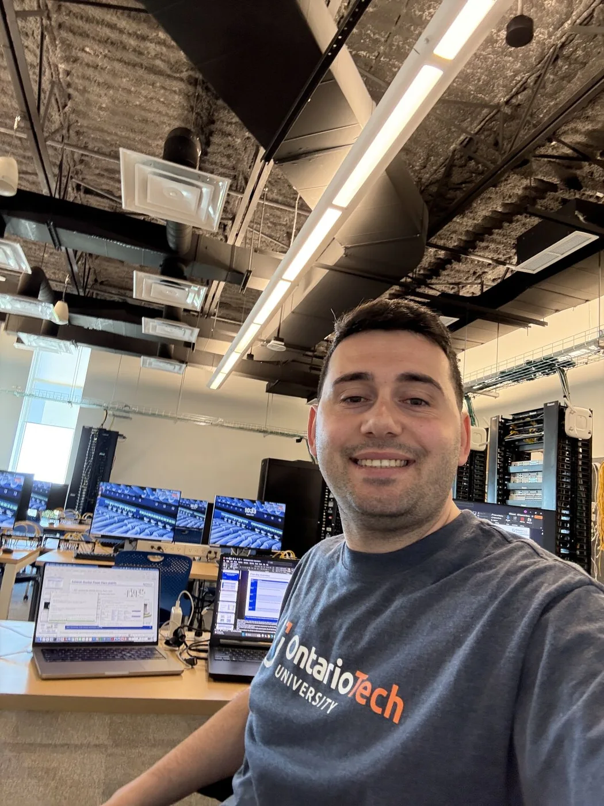

Ontario Tech University / Oshawa, Canada
Teaching
My teaching assistant appointments span undergraduate and graduate machine learning, cybersecurity, data analytics, and project management. I also supported simulator-based training for nuclear industry professionals.

Graduate Teaching Assistant
Faculty of Business and Information Technology, Ontario Tech University. Appointments by academic term.
- Machine Learning (graduate)MITS 6800G / Winter and Fall 2026
- Assessed assignments, term tests, and final projects. Supported students through office hours and email, including questions about machine learning methods, implementation, and evaluation.
- Machine Learning (undergraduate)INFR 3700U / Winter 2026
- Marked programming assignments, project reports, and midterm work. Assisted with project presentations and answered questions about assignments and course material.
- Special Topics in IT SecurityMITS 5610G / INFR 4599U / Spring-Summer 2026
- Helped prepare course material, supported tutorials and demonstrations, and assisted with assessment. The course connected industrial control concepts with nuclear cybersecurity through a training simulator.
- Special Topics: Data AnalyticsINFR 4599U / BUSI 4590U / Spring-Summer 2026
- Marked assignments and projects using the instructor's rubrics, reviewed statistical analysis and interpretation, and recorded grades in Canvas. This was a separate appointment from the security special-topics course.
- Introduction to Project ManagementBUSI 2550U / Fall 2026
- Supported two sections, assessing group assignments, individual projects, and midterm work. Assisted with student consultations and exam invigilation.
Industry course / June 2026
Course Assistant: Nuclear Energy Systems, I&C, and OT Cybersecurity
I helped introduce participants to the IAEA Asherah Nuclear Simulator and supported its use in hands-on exercises. We connected nuclear plant systems and instrumentation and control to industrial communications, operational technology security, and AI-supported monitoring.
The course was delivered at Ontario Tech University with support from the Brilliant Energy Institute and in collaboration with the International Atomic Energy Agency.